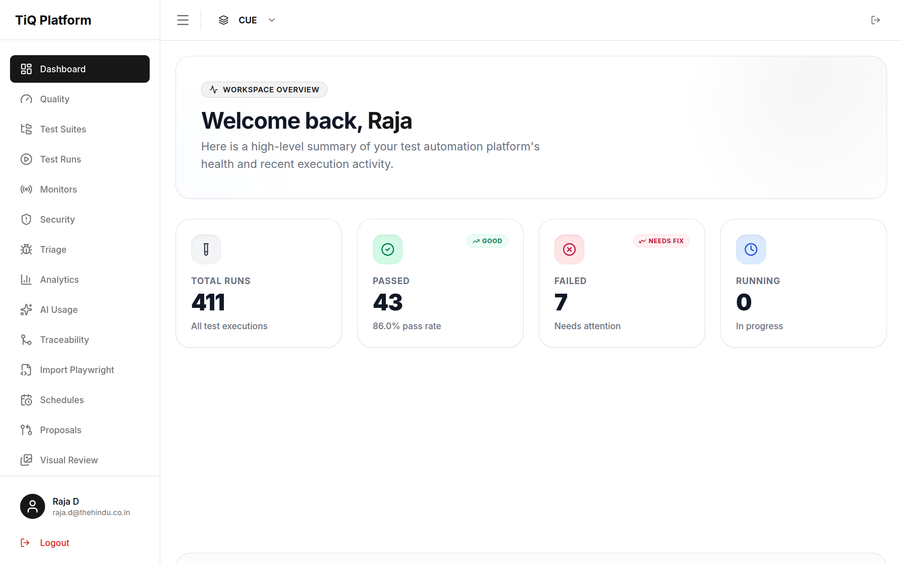
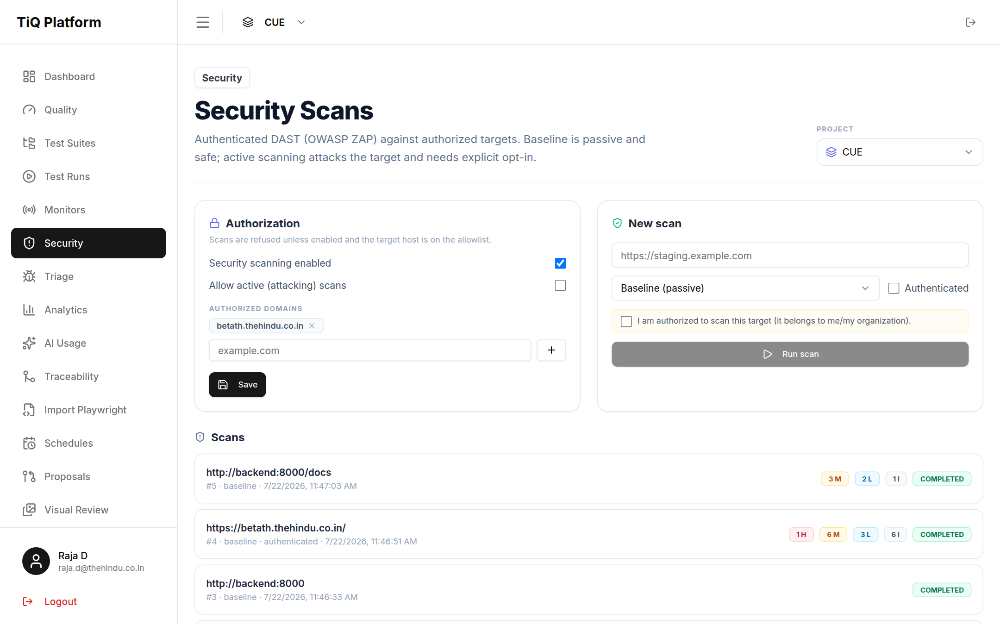
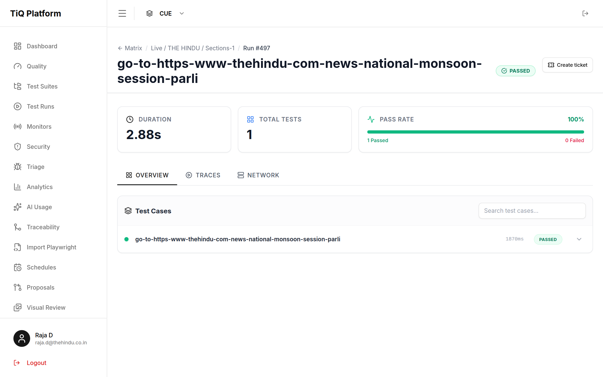
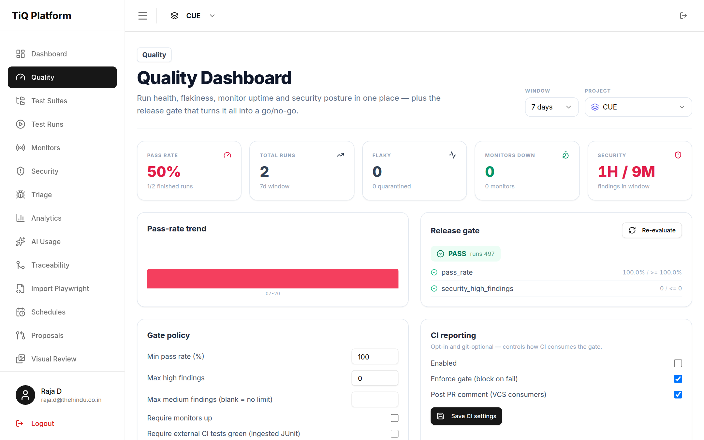
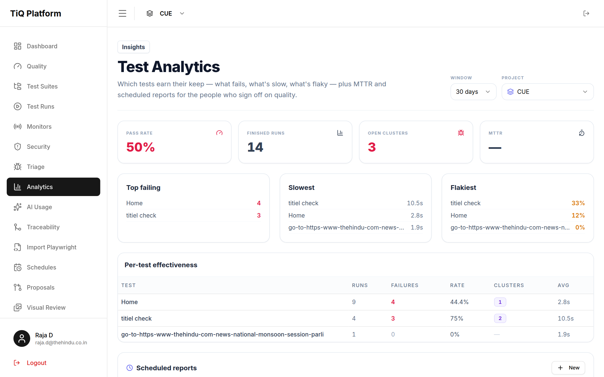

One platform for every layer of quality
TraceIQ records browser and API test journeys, runs them across distributed workers, and correlates UI, API, performance, load, security, and uptime against the same commit — then a single quality gate decides go / no-go. This page covers every feature: what it does, and how to use it.

What TraceIQ is
A unified quality platform — not just a UI testing tool.
TraceIQ began as a Playwright-based UI testing product and has grown into a single place a team uses to keep a product healthy across every layer. The defensible idea is unification: rather than out-featuring k6 at load or ZAP at security, TraceIQ ties all of them to the same git_commit / pull request, reasons across the results with AI, and gates a release on the whole picture.
A FastAPI + Celery control plane dispatches jobs over Redis Streams to Node/Playwright workers, stores artifacts in MinIO (S3-compatible), and persists everything in PostgreSQL. You interact through the React web app, the REST API, the MCP server, or the GitHub Action.
Core concepts
The hierarchy, roles, and executor model everything else builds on.
The object hierarchy
CoreEverything is scoped inside a tenant. Settings (headers, params, auth) are inherited from a parent suite to its children unless a child opts out.
Roles & access (RBAC)
CoreAccess is checked at Workspace → Team → Project → TestCase level. Three minimum roles gate what you can do:
| Role | Can |
|---|---|
| Viewer | Read suites, cases, runs, results, dashboards. |
| Editor | Everything a viewer can, plus create / edit / run tests, delete runs, triage findings. |
| Admin | Everything an editor can, plus manage members, plans, and delete projects. |
Executors
CoreEach test case declares an executor — the kind of worker that runs it. The run denormalizes it at dispatch, so a new pillar is just a new worker reporting through the same job → webhook → finalize contract.
load-test step is automatically flagged as a load case, for example.Run lifecycle
What happens between "Run" and a finalized result.
# Run a whole suite; git context is optional but powers PR correlation
curl -X POST "$TRACEIQ/api/runs?suite_id=42&browser=chromium" \
-H "X-API-Key: tiq_..." \
-H "Content-Type: application/json" \
-d '{"git_commit": "abc123", "git_branch": "main", "git_pr_url": "https://github.com/org/repo/pull/12"}'
# Then poll for status
curl "$TRACEIQ/api/runs/507" -H "X-API-Key: tiq_..."celery_beat is required for runs to finalize — it drains the results stream every 2 seconds. Without it, runs stay RUNNING forever even after workers complete.Test builder
Author steps visually, with a screenshot-based element picker.
Building a test case
CoreThe builder is a step-by-step editor: each step has a type, a target (selector or URL), and type-specific parameters. An element picker renders the page headless and lets you click the element you mean instead of hand-writing selectors.
How to use- Open a suite → New test case (or Builder for the full-screen editor).
- Add steps from the action menu — grouped into Navigation & Interaction, Assertions, API & Data, and Advanced.
- For UI steps, use Pick element to grab a stable selector from a live screenshot of the page.
- Save. Run the case standalone, or as part of its suite.
#id, [data-testid=…], then role/text selectors. Steps also carry an optional intent string that powers AI self-healing when a selector drifts.Step catalog
45+ step types. New in this build are highlighted.
GET /api/step-types, and is what the MCP describe_step_types tool returns to AI agents.Variables & secrets
Interpolation tokens that make suites portable and data-driven.
Interpolation
CoreAny step value, header, param, or body can reference runtime values with {{…}} tokens, resolved by the worker at execution time.
| Token | Resolves to |
|---|---|
{{env.KEY}} | A variable from the selected project Environment. |
{{secret.KEY}} | A Fernet-encrypted Project Secret (decrypted only at dispatch, never logged). |
{{data.KEY}} | A column from the current data-driven dataset row. |
{{fake.KIND}} | Generated test data — uuid, email, name, phone, date… |
{{name}} | A runtime variable set earlier by extract-value, an API extract, or run-script. |
Environments & secrets
CoreReusable per-project configs so one suite runs against dev / staging / prod. A relative goto URL resolves against the environment's base_url.
- Go to Environments, create one per target (dev, staging, prod) with a
base_urland variables. - Add secrets (tokens, passwords) — they are write-only and stored encrypted.
- Reference them in steps as
{{env.X}}/{{secret.X}}, and pin a run to an environment when you trigger it.
Import & record
Bring existing assets in with less friction.
Import Playwright scripts
GatedUpload a .spec.ts and run it verbatim through the Playwright test runner (the raw_playwright executor). Zero-friction, but you trade away step-level AI heal and the per-step trace mapping until it's converted to native steps.
- Import Playwright → paste or upload your spec.
- Enable on a sandboxed worker only — it runs arbitrary code, so it is gated by
RAW_PLAYWRIGHT_ENABLEDand needs a worker image with browsers.
Browser recorder
ScaffoldA Chrome MV3 extension records goto / click / fill / press-key with stable selectors and an intent, then posts them to /api/cases with your API key. Install unpacked via developer mode.
Data-driven tests
Run one case across many input rows.
Datasets
CoreAttach a dataset (a list of rows) to a case; the worker expands it into one execution per row, and each row's columns are available as {{data.KEY}}.
// A login case with three credential rows becomes three executions
dataset = [
{"user": "alice", "pass": "wonderland"},
{"user": "bob", "pass": "builder"}
]
// step: fill #username → {{data.user}}, fill #password → {{data.pass}}Personas & auth sessions
Run tests "as" a logged-in user without repeating the login every time.
Auth sessions
CoreMark a case as an auth setup; on success the worker captures its logged-in storageState, which TraceIQ stores and injects into later runs in the project — so downstream tests start already authenticated.
- Create a case that performs the login and flag it is auth setup.
- Run it once — the session is captured and persisted.
- Other cases reuse it automatically (opt out per case with use auth session = off).
Execution modes
How a suite's cases are distributed across workers.
| Mode | Behavior | Use when |
|---|---|---|
| SEPARATE | One job per case (or per sub-suite), run in isolation. | Independent tests; maximum parallelism. |
| CONTINUOUS | One job per suite; cases share a browser context sequentially. | Steps that build on shared state. |
| PARALLEL | Fan-out one job per case with a concurrency hint. | Large suites; tune with PARALLEL_MAX_CONCURRENCY. |
Schedules
Run suites on a cron — the basis for monitoring and recurring scans.
Scheduling
CoreCreate a schedule with a cron expression against a suite or case. A schedule can also be flagged as a monitor (see Synthetic monitoring) or set to fire a recurring security scan.
- Schedules → New → pick a suite, set the cron (e.g.
0 9 * * 1for Mondays 9am). - Optionally flag it as a monitor or set a security-scan target.
Local dev worker
Test localhost before you deploy — the pre-commit bridge.
Poll-based local execution
NewServer-side workers can't reach a developer's machine, so normally TraceIQ can only test deployed targets. The local worker closes that gap: run a thin worker next to your dev server; it polls TraceIQ over HTTPS for jobs pinned to it, runs them against localhost, and posts results back through the normal pipeline. Nothing about your dev server is exposed publicly.
# 1. Start the worker beside your dev server (execution-engine/)
TRACEIQ_URL=https://traceiq.example.com \
TRACEIQ_API_KEY=tiq_... \
TRACEIQ_WORKER_ID=my-laptop \
npm run worker:local
# 2. Trigger a run pinned to it
curl -X POST "$TRACEIQ/api/runs?suite_id=42" -H "X-API-Key: tiq_..." \
-d '{"local_worker_id": "my-laptop"}'Self-healing selectors
Recover from UI drift instead of just failing.
Reactive, runtime & proactive heal
AI- Reactive — on a selector miss the worker asks the LLM for a replacement and records a heal proposal for review.
- Runtime — with
RUNTIME_HEAL_ENABLED, if the healed selector uniquely matches the live DOM the step is retried so the run recovers, and the old→new change is logged. - Proactive — a post-run task audits stored selectors against captured DOM and proposes durable fixes.
intent is the durable contract the heal reasons against.UI testing
The core pillar — browser journeys with rich verification.
expect-visual-match does a perceptual pixel diff against a stored baseline, with mask regions and a tolerance.check-accessibility runs axe-core and filters violations by impact threshold.mock-response, block-request, and set-network-latency make flaky flows deterministic.Visual baselines
Core- Add an
expect-visual-matchstep; run once to capture a candidate. - Promote the candidate to a durable baseline on the Visual Review page.
- Future runs fail the step when the diff ratio exceeds tolerance.
API testing
First-class request testing with chaining, contracts, and auth.
http-request
CoreExtract newCall any REST endpoint (comma-separate URLs for a batch), assert on status, JSON-path, or full JSON-schema, and now extract response values into runtime variables for the next request — the login→token→authorized-call pattern.
{"type": "http-request", "value": "{{env.base_url}}/api/login",
"params": {
"method": "POST",
"body": {"user": "{{secret.USER}}", "pass": "{{secret.PASS}}"},
"assertions": [{"type": "status", "value": 200}],
"extract": [{"path": "data.token", "variable": "token"}]
}}
// later step header: { "Authorization": "Bearer {{token}}" }$. prefix) with array indexing — items.0.id or items[0].id.GraphQL
NewPost a query + variables, fail automatically on a GraphQL errors[] array (unless allow_errors), and assert / extract on data paths.
{"type": "graphql", "value": "{{env.base_url}}/graphql",
"params": {
"query": "query($id: ID!){ user(id:$id){ name email } }",
"variables": {"id": "1"},
"assertions": [{"type": "data-path", "path": "user.name", "operator": "exists"}]
}}OAuth2 token
NewFetch a client-credentials token from the app under test and store it as a runtime variable for subsequent requests. Reference the secret, never paste it.
{"type": "oauth2-token", "value": "{{env.base_url}}/oauth/token",
"params": {"client_id": "{{secret.CLIENT_ID}}", "client_secret": "{{secret.CLIENT_SECRET}}"}}
// stores {{access_token}} for later Authorization headersFeeds & AMP
Corefeed-check validates RSS/Atom/XML with XPath assertions; amp-validate checks AMP HTML compliance.
Performance & web vitals
Every UI run doubles as a performance check.
Web-vitals capture
NewEach test's final document is measured for LCP, CLS, TTFB, FCP, DOMContentLoaded, and load time — captured automatically, no extra step. Chromium reports the full set; other browsers report what they expose.
In the quality-gate policy, set max_lcp_ms, max_cls, and max_ttfb_ms (0 = off). The gate checks the worst sample across the evaluated runs and fails the release if a budget is exceeded.
Load testing
k6 under the hood, driven by a declarative step.
load-test
NewDescribe a load profile — target, virtual users, duration, ramp-up, and thresholds. TraceIQ generates the k6 script from your spec (no user code runs), executes it, and fails the case if any threshold is breached. Aggregate metrics and per-threshold verdicts land on the run.
{"type": "load-test", "value": "{{env.base_url}}/api/overview",
"params": {
"vus": 20, "duration_s": 60, "ramp_up_s": 10,
"thresholds": {"p95_ms": 500, "error_rate": 0.01, "min_rps": 50}
}}k6 binary; caps are configurable (LOAD_MAX_VUS, LOAD_MAX_DURATION_S). Only load-test apps you own.Security testing
Defensive DAST — passive by default, active behind hard guardrails.

Passive checks
CoreZero extra traffic: TraceIQ analyzes responses already captured during a run for missing security headers (CSP/HSTS/etc.), insecure cookie flags, information disclosure, and plaintext transport. Runs automatically at finalize, or on demand.
Authenticated ZAP scans
CoreA baseline (spider + passive) or active (attacking) scan via OWASP ZAP. The differentiator: TraceIQ turns your captured Playwright storageState into a ZAP session cookie, so scans run behind the login.
- Per-project verified-domain allowlist — only registered targets can be scanned.
- An explicit "I'm authorized to scan this" attestation on every scan.
- Active scans need a global flag and a per-project opt-in (double opt-in).
Findings lifecycle & scan diffs
NewFindings unify into one model regardless of source. Triage each one — open / acknowledged / false-positive / resolved — and a false-positive verdict carries forward to the same finding in future scans instead of resurfacing. Scan-over-scan diff shows what's new, fixed, and persisting.
- Enable security + add the target host to the allowlist in Security settings.
- Run a scan (or schedule a recurring baseline scan on a cron).
- Triage findings inline; open a scan to see its diff against the previous one.
Synthetic monitoring
Run the same tests against production on a schedule; alert on failure streaks.
Monitors
CoreFlag any schedule as a monitor: each scheduled run becomes a health check, consecutive failures drive DOWN / RECOVERY alerts, and every check feeds uptime and SLA windows.
Public status pages
NewGenerate a shareable, unauthenticated status page from a project's monitors — names, up/down state, and uptime only (never URLs or run detail). The slug is unguessable and rotatable.
- On the Monitors page, create the status page and copy its link.
- Share
/status/<slug>; it auto-refreshes every 60s. Rotate the link to invalidate it.
Alerts & TLS checks
New- Alert channels: Slack and Teams (project settings), plus per-monitor email recipients.
check-tlsstep validates a certificate chain and fails when it expires within N days — pair it with a monitor for cert-expiry alerting.
Run details & trace
Everything captured about a run, in one place.
The run detail page
CoreStep-level results with a custom Playwright trace timeline (actions, timings, errors), video, screenshot gallery, a network tab, request/response bodies, web-vitals chips, load metrics, and the AI failure analysis panel.

.webm, trace .zip, screenshots, visual diffs) are stored in MinIO and served through access-checked URLs.AI failure analysis
Why it broke, in a typed, machine-readable shape.
Typed failure reports
AIA heuristic classifier always runs; when an LLM provider is configured the report is deepened with a structured JSON call. Each failure is categorized as app_bug / test_bug / environment / flake / unknown with a fix target, confidence, and evidence — plus a run-level rollup.
Triage & flake management
One root cause is one item — and flaky tests get quarantined.
Failure clustering
CoreFailing results are fingerprinted (normalized error → signature) into clusters, so N failures with one root cause become one triage item with an assignee and state. File one ticket per cluster.
Flake detection
CoreA statistical flake score (alternation ratio over the last 20 results) auto-quarantines a case above 0.4 and auto-releases below 0.15. Quarantined cases are skipped at dispatch. Manage them on the Flaky Tests page.
Comparison runs
Re-run a baseline against a new target and diff the outcome.
Deployment comparison
CorePoint a known-good suite at a new target_url (e.g. a preview deploy) and get a side-by-side delta against the baseline run.
POST /api/runs/comparison
{"baseline_run_id": 318, "target_url": "https://pr-42.preview.example.com"}Quality dashboard & release gate
The payoff of unification — one go / no-go decision.
Unified dashboard
CorePer project, one snapshot aggregates run pass-rate and trend, flakiness, monitor uptime, and security findings by severity.

The release gate
CorePerf + CI checks newA per-project policy evaluated for a commit (or the latest run). It fails closed — you can't certify what didn't run.
| Policy key | Check |
|---|---|
min_pass_rate | Pass rate across evaluated runs. |
max_high/medium_severity_findings | Security findings ceiling. |
require_monitors_up | No monitor may be down. |
max_lcp_ms · max_cls · max_ttfb_ms | Performance budgets (worst sample). |
require_external_tests_pass | Ingested CI (JUnit) results must be green. |
GET /api/projects/42/quality-gate?git_commit=abc123
// → { "passed": false, "checks": [ {name, passed, actual, threshold}, ... ] }CI results ingestion
Fold the tests TraceIQ doesn't run into the same gate.
JUnit XML ingestion
NewTraceIQ will never execute your unit tests — but it can ingest their results. Push your CI's JUnit report per commit; totals and failing cases show on the dashboard, and the gate can require them green. That makes "one gate decides go / no-go" literally true.
curl -X POST "$TRACEIQ/api/projects/42/external-results?git_commit=abc123" \
-H "X-API-Key: tiq_..." -H "Content-Type: application/xml" \
--data-binary @junit.xmlPR gating
Block a merge on the whole quality picture.
Consolidated report & GitHub Action
CoreA git-optional report keyed by run id returns results + security + the gate verdict as ready-to-paste markdown. The GitHub Action triggers a run, polls, and gates the PR on the server-side verdict. CI-/VCS-agnostic — anything that speaks REST works.
GET /api/runs/507/report # consolidated, includes gate + security + markdownPer-project CI settings (enabled, enforce_gate, post_pr_comment) control whether and how CI blocks — teams not using CI are unaffected.
Traceability
Which requirements are tested — and passing.
Requirement links
CoreLink test cases to free-form requirement references (a ticket key, a spec id). The coverage rollup answers "is requirement X tested and passing?" and surfaces untraced cases — deliberately lightweight, not a full RTM.
Issue trackers
File a defect from a failure, with evidence attached.
Jira · iTop · GitHub Issues
CoreConfigure a workspace tracker (credentials stored encrypted), then create a ticket from a run or a failure cluster. TraceIQ pulls the trace / video / screenshots from MinIO and attaches them (GitHub, which has no attach API, gets signed links instead).
- Issue Trackers → connect Jira / iTop / GitHub.
- On a run or cluster, Create ticket — artifacts are attached automatically.
Analytics & reports
Trends, effectiveness, and scheduled summaries.

Test effectiveness
CorePer-test runs / failures / failure rate / clusters / duration, plus a project summary — pass rate, MTTR, top-failing, slowest, and flakiest tests.
Scheduled reports
CoreRecurring quality summaries delivered to Slack / Teams / email on a cron and window you choose. Notifications on run events are configured per project.
Users & RBAC
Multi-tenant access control.
Workspaces, teams & invites
CoreManage members, teams, and role assignments per workspace and project. Access resolves through workspace-admin → direct project grant → team-based grant → deny. Every mutation is written to an audit log.
Auth: SSO & MFA
Enterprise-ready sign-in.
OIDC_* env is set; discovery → authorize → token → userinfo → JIT user.Billing & plans
Metered usage and plan quotas.
Plans, subscriptions & quotas
CoreFree / Pro / Enterprise plans with per-workspace limits (monthly runs, seats, concurrent runs, retention, AI generations, and LLM tokens). Usage is metered per calendar month; run creation returns 402 when a quota is exhausted. Works manually (admin assigns a plan) or through Stripe checkout when configured.
0 = unlimited. The Billing page shows current plan, usage meters, and available tiers.AI usage & providers
Multi-provider LLM support with full token accounting.
Provider abstraction
CoreEvery AI feature (failure analysis, selector heal, test generation) runs through one abstraction. Switch backends with LLM_PROVIDER + LLM_MODEL.
Token metering
NewEvery LLM call records tokens, latency, feature, and success. The AI Usage page breaks it down by provider, model, and feature with a daily trend; monthly totals roll into billing so you can cap tokens per plan.
monthly_llm_tokens plan limit to cap spend — over-cap calls are skipped and features fall back to their non-AI behavior.API keys & webhooks
Service accounts and outbound events.
API keys
CoreMint workspace-scoped tiq_… keys for CI and agents. Pass them as X-API-Key on any endpoint; keys are hashed, role-scoped, expirable, and revocable. An API key can't accept its own AI proposals or mint other keys — blast-radius limits by design.
Outbound webhooks
CoreRegister HTTPS endpoints to receive HMAC-SHA256-signed (X-TraceIQ-Signature) events when a run finalizes — for CI bots and agent callbacks.
MCP server
Wire Claude Code / Cursor to TraceIQ as a tool.
29 tools for AI agents
AIThe MCP server exposes TraceIQ as callable tools so a coding agent can discover the app surface, select tests for a diff, run suites, read failure analysis, and propose case changes — all under the same RBAC and the human-review proposal queue.
GitHub Action
Regression gating in your PR workflow.
Usage
Core- uses: your-org/traceiq-action@v1
with:
api_key: ${{ secrets.TRACEIQ_API_KEY }}
suite_id: 42
fail_on: gate # block the PR on the server-side quality gateIt attaches git context, polls to completion, posts an idempotent PR comment with per-case results + artifact links + AI analysis, and honors the project's CI settings.
API cheat sheet
The endpoints you'll reach for most.
| Endpoint | Purpose |
|---|---|
POST /api/runs?suite_id= | Trigger a run (body carries git + local_worker_id). |
GET /api/runs/{id} | Run status + results. |
GET /api/runs/{id}/report | Consolidated report + gate verdict + markdown. |
GET /api/projects/{id}/quality | Unified quality snapshot. |
GET /api/projects/{id}/quality-gate | Evaluate the release gate. |
POST /api/projects/{id}/external-results | Ingest JUnit XML. New |
POST /api/projects/{id}/security-scan | Start a ZAP scan (gated). |
GET /api/status/{slug} | Public status page (no auth). New |
GET /api/jobs/poll?worker_id= | Local worker pulls its next job. New |
GET /api/workspaces/{id}/llm-usage | Token usage stats. New |
POST /api/cases/generate | AI test-from-intent. |
GET /api/step-types | Machine-readable step catalog. |
Authorization: Bearer) or a service-account key (X-API-Key: tiq_…).